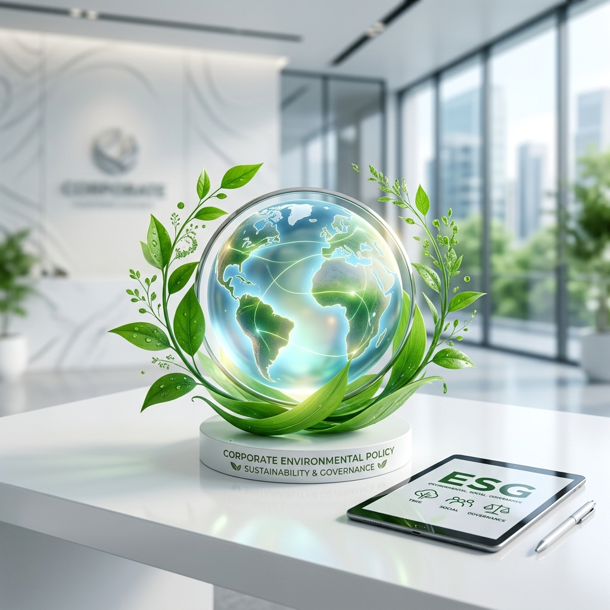

The Company establishes environmental policies and practices as a core operational framework, focusing on optimal resource utilization and minimizing ecological impacts across the value chain:
- Environmental Protection: Maintain and protect the environment around operational areas in compliance with laws and international standards.
- Resource Efficiency Targets: Set clear goals for resource utilization while managing water and air pollution within legal limits.
- 3Rs Waste Management: Implement Reduce, Reuse, and Recycle principles to minimize waste generation effectively.
- Energy and Climate Management: Improve operational technologies to enhance energy efficiency and mitigate climate impacts.
- Resource Allocation and Training: Provide necessary budget and training for personnel to drive environmental goals.
- Biodiversity Awareness: Educate employees and stakeholders on the ecological impacts of business activities.
- Green Corporate Culture: Ensure all levels, including subsidiaries, strictly adhere to environmental policies.
- Transparency and Disclosure: Prepare annual performance reports and continuously disclose environmental progress to stakeholders.
Water Management
Sustainable Water Management is essential for petrochemical operations, from equipment cleaning to quality control and safety. The Company has established the following measures:
- Inspection and Monitoring: Regularly control water usage.
- Efficiency Enhancement: Improve processes to reduce unnecessary water consumption.
- Wastewater Treatment: Maintain treatment systems in compliance with relevant standards and laws.
Performance Results
Based on operations in 2025, the Company used 3,421 cubic meters of water, representing a 25.38% decrease compared to the base year (2024). This resulted in an accumulated water consumption over the two-year period (2024-2025) of 8,006 cubic meters.
Projects and Activities in 2025
Green Workplace Project (Ongoing): Focuses on creating an eco-friendly office and promoting efficient resource use by encouraging employees to use water mindfully and displaying warning symbols at water usage points.
Waste Management
Focuses on systematic and responsible waste management for both hazardous and non-hazardous waste to minimize environmental and community impacts. The Company adheres to:
- 3Rs Principles: Source reduction (Reduce), reuse (Reuse), and recycling (Recycle).
- Proper Disposal: Executed through legally authorized service providers in strict compliance with laws.
- Employee Participation: Building a green corporate culture by involving personnel in waste segregation at the source.
1. Education and Training on Waste Management
- Organize training on waste segregation and environmental impacts.
- Create PR materials such as banners, posters, and video clips.
2. Installing Waste Separation Systems in the Workplace
- Place clearly labeled segregated waste bins in work areas.
- Set up drop-off points for hazardous waste (e.g., batteries, light bulbs).
3. Creating Activities to Promote Participation
- Organize "Proper Waste Segregation" contests with rewards.
- Host Waste Exchange Day activities for employees.
4. Integrating "Zero Waste" Concepts
- Encourage the use of personal containers and abstain from single-use plastics.
- Establish an environmental volunteer network (Green Volunteer / Waste Watcher).
5. Communication and Reporting
- Communicate waste reduction results via internal channels (Intranet, E-mail).
- Link employee participation to ESG targets in sustainability reports.
Performance Results
| Type | Year 2024 (Base Year) | Year 2025 | Target |
|---|---|---|---|
| General Waste | 10.88 Tons | 8.60 Tons | Increase recycling proportion by 5% per year |
| Recyclable Waste | 0.64 Tons | 0.36 Tons | |
| Industrial Waste | 64.76 Tons | 98.79 Tons | |
| Total | 76.28 Tons | 107.75 Tons | |
| Recycling Proportion (%) | 0.84% | 0.33% |
Environmental Conservation
The Company operates a trading business. Therefore, it has a policy to select and purchase products from manufacturers/sellers who meet standards and possess environmental awareness, as well as caring and considering environmental impacts at every stage of the business process. The Company prioritizes environmental changes affecting society as a whole, including impacts on health and safety of employees and the public, valuing these impacts more than business returns. The environmental business policy is defined as follows:
- Promote environmental awareness and responsibility among the Company's employees.
- Comply with written regulations and the spirit of relevant environmental laws and authorities.
- Maintain a safe, healthy, and environmentally friendly workplace by adhering to the best operational standards as a guideline.
- The Company will oversee every step of product delivery to prevent potential hazards to employees and customers in terms of safety and health.
- The Company will efficiently manage the use of natural resources and energy by promoting energy conservation in the Company's activities and striving to mitigate global warming, alongside fostering eco-friendliness.